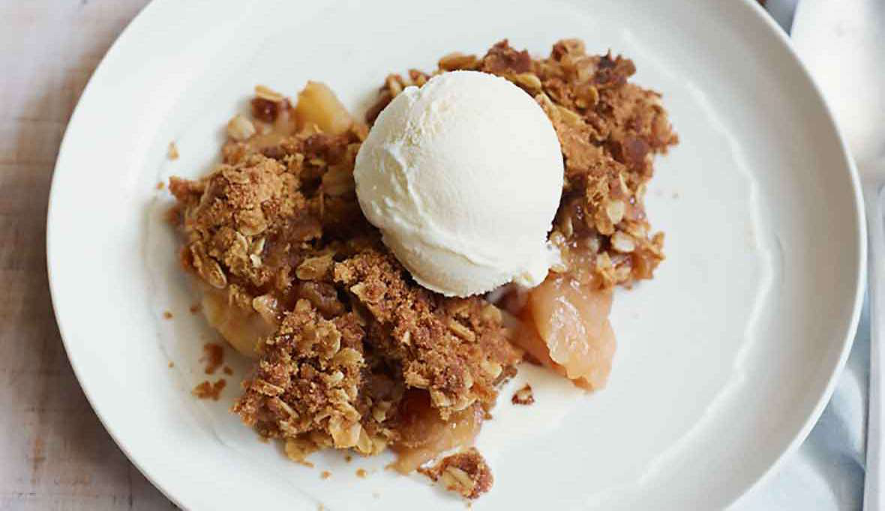

Mini Apple Crumble
Ingredients
- 100 g Apple (small)
- 15 ml Natural Sweetener (stevia)
- 5 ml Cinnamon
- 10 g Sugar Free Maple Syrup
- 1.0 arnott 's Biscuit (any brand biscuits will work)
- 2 g oats
Instructions
- Preheat the oven to 200 degrees celsius.
- Slice an apple into small cubes & remove the core.
- Place the cubed apple pieces into a bowl then add 1 Tbsp of natural sweetener (stevia), 1 tsp of cinnamon & 1 Tbsp of sugar free maple syrup.
- Mix everything together so that all of the apple pieces are covered completely.
- Pour the apple pieces into a small oven safe baking dish.
- Crush 1 Arnott's biscuit (or any biscuit) & sprinkle it on top of the apples pieces.
- Sprinkle 2g of oats on top for extra crunch (optional)
- Bake in the oven at 180 degrees celsius for 30 minutes.
- Add a scoop of halo top ice cream on top (optional)
Source PDF page 51